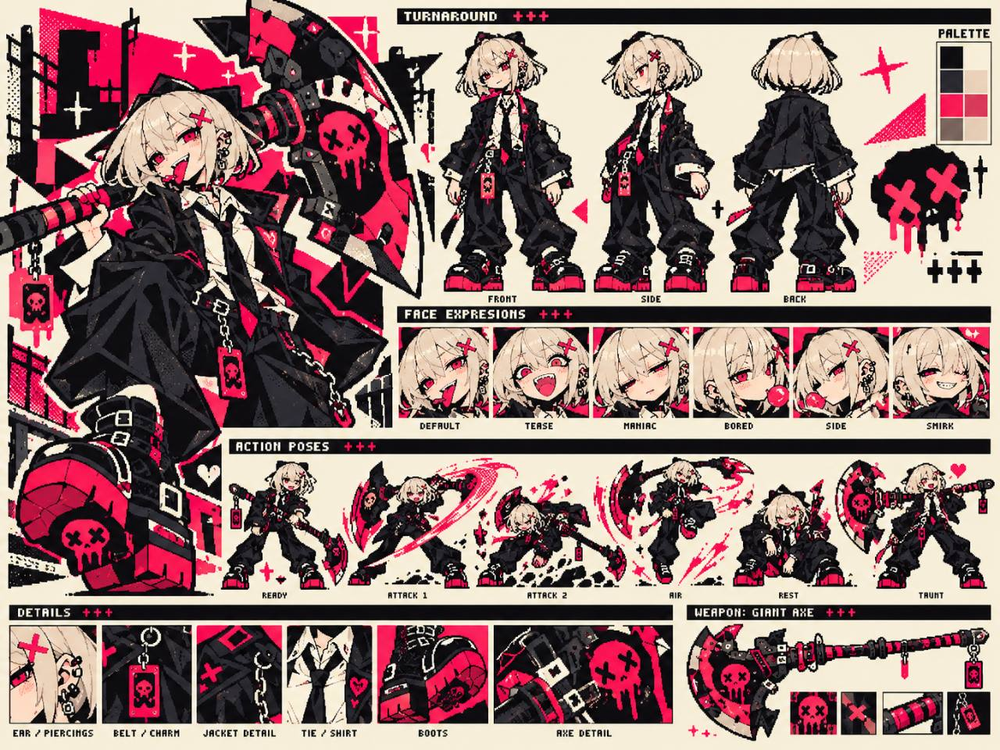
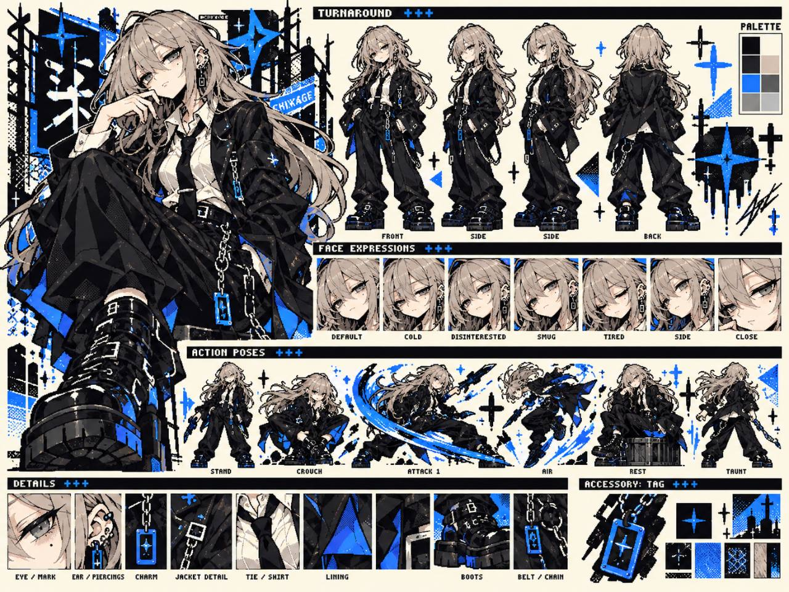

異常処理室
NIGHT SHIFT / UNIT 02
1×
?

01 / BREACH
破壊は、私に任せて。
セツカ
SETSUKA
待機中
未特化

02 / ANALYZE
……後のことは、私が。
チカゲ
CHIKAGE
待機中
未特化
×
CASE
01
/10
異物
0
DATA
0
待機
00:00
CASE FILE / 001
実体
笑わない死体
旧市街 / 地下安置室
研究 0
◉
UNIDENTIFIED
処理
0%
0%
解析
0%
0%
危険
14%
14%
処理100%で解決。解析を進めると弱点を看破し、DATA回収量が増加。
⌁
ふたりの組み合わせが、夜を変える。
LIVE LOG
STANDBY
00:00
夜間対応班、待機。最初の育成方針を選んで出動。
RESTRICTED
ACCESS / 02
壊す。知る。
ふたりで、終わらせる。
このゲームを遊ぶにはブラウザのJavaScriptを有効にしてください。